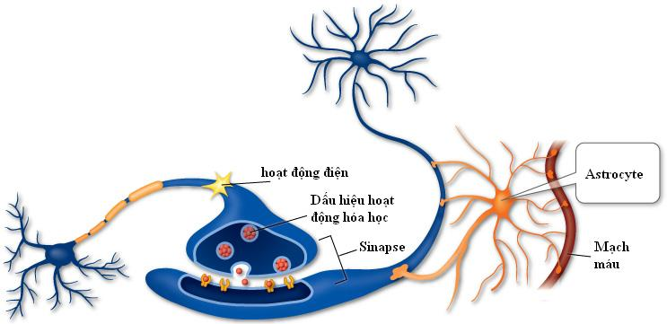

+ U tế bào hình sao võng mạc

Hình: Tế bào hình sao và liên quan
+ Astrocytoma võng mạc là một dạng u lành tính mắc phải do sự gia tăng những tế bào hình sao ở lớp võng mạc thần kinh.
+ U tế bào sao võng mạc hiếm gặp, chưa có tỷ lệ thống kê chính xác. Thường xảy ra những năm đầu của đời sống và được phát hiện ở độ tuổi ấu thơ hoặc khi lớn hơn. Tuy nhiên một số không được phát hiện cho đến tuổi trưởng thành.

Hình: Khối u tế bào thần kinh võng mạc hình sao
(Trích từ http://www.nature.com/eye)
+ Bệnh nhân có thể có một hoặc nhiều khối u tế bào hình sao, thường không có triệu chứng về thị giác nếu khối u không ảnh hưởng đến hoàng điểm. Thường astrocytoma võng mạc nằm xa trung tâm hoàng điểm gây nên bong võng mạc không có lỗ rách liên quan đến võng mạc hoàng điểm và gây giảm thị lực.
+ Biểu hiện lâm sàng với khối màu trắng, nằm nông dưới võng mạc. Hình thái của khối này có thể nhỏ, ánh sáng xuyên qua được, dạng nhiều nốt riêng biệt, đục trắng, tổn thương trong võng mạc cho đến dạng u giống trái dâu, đậm độ, bị canxi hóa. Những tổn thương này có thể được quan sát ở mắt bên kia. Chúng có thể nằm bất kỳ ở vị trí nào trong võng mạc. Những bệnh nhân mắc bệnh tubercuos sclerosis hoặc neurofibromatosis và u tế bào hình sao võng mạc dường như sẽ có nhiều tổn thương và có ở ngoại vi hơn.
+ Thể astrocytoma võng mạc không điển hình là một u tế bào sao biệt lập, không triệu chứng. Chúng có thể đạt được kích thước tương đối lớn và gây giảm thị lực do liên quan đến vùng hoàng điểm, hoặc do tích tụ dịch xuất tiết dưới võng mạc.
+ Chọc sinh thiết cho phép chẩn đoán xác định.
+ Chẩn đoán phân biệt: 1, U nguyên bào võng mạc 2, U hạt do nhiễm toxocara canis 3, Tổn thương xuất tiết hoàng điểm lan rộng trong bệnh lý giãn mạch võng mạc vô căn hoặcl u mao mạch võng mạc 4, Một vùng sợi thần kinh võng mạc bị myeline. 5, U hắc võng mạc 6, Khối u tế bào glia võng mạc
+ Điều trị: Theo dõi, khoét nhãn cầu khi mù, đau mắt do tăng nhãn áp do khối u lớn nội nhãn.

Hình: a, Chụp mạch huỳnh quang pha sớm. b, Pha muộn. c, Chụp đáy mắt băng Indocyanine.
d, Khối u trong võng mạc dưới siêu âm B
(Trích từ http://www.nature.com/eye)